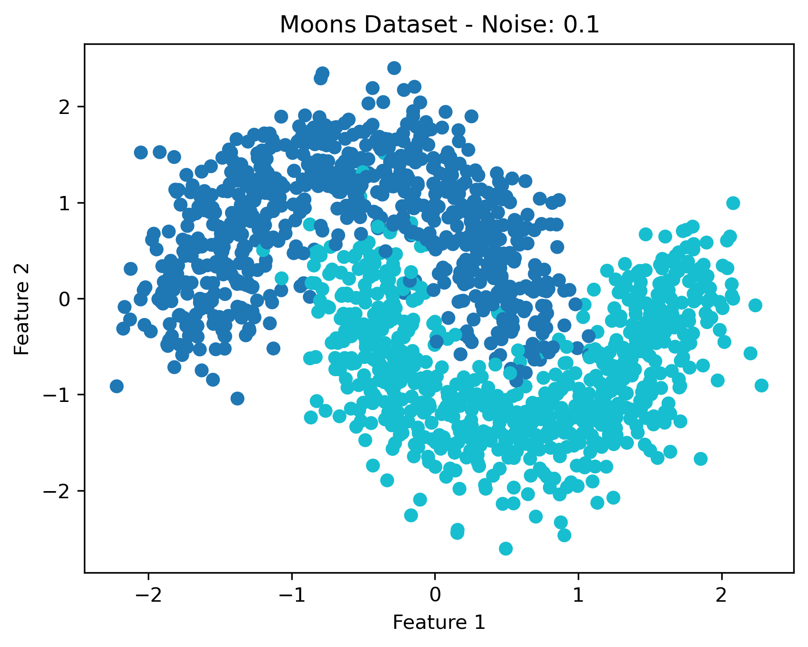
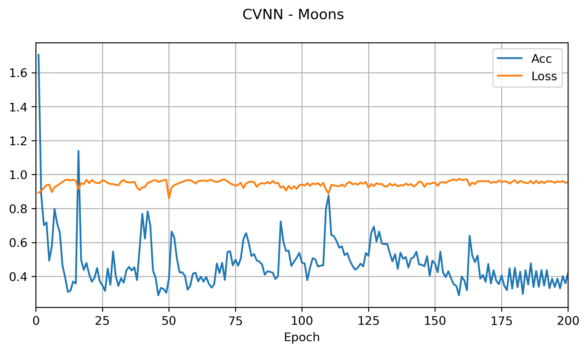
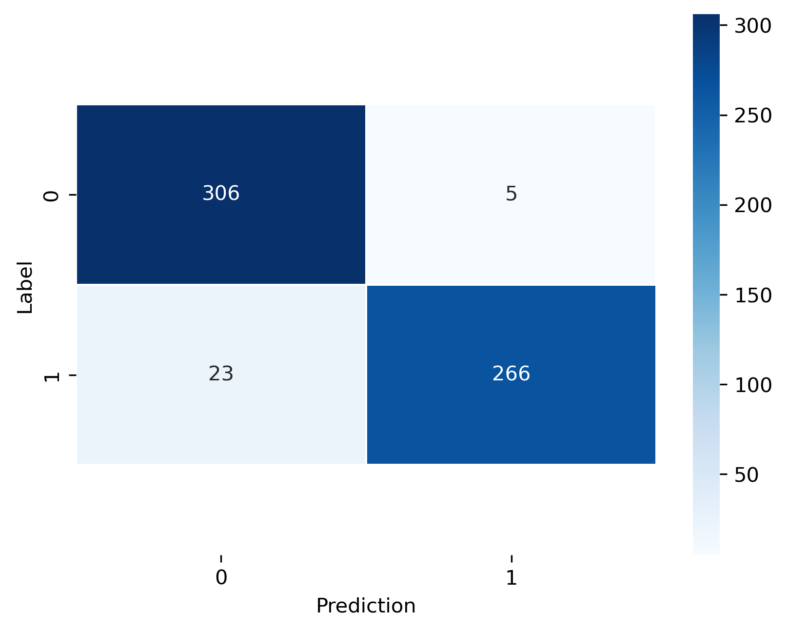

Building a Binary Classifier
In this example, the moons dataset is used to build a binary classifier.
Dataset
In this example the moons dataset is used to build a binary classifcator. The aim is to find the boundary beetween two cresecent moons. The entire data set consists of 1500 data points and is shown in the image below.
MLMVN
def backward_hook(module, grad_input, grad_output):
print("module:", module)
print("grad_input:", grad_input)
print("grad_output:", grad_output)
model_dict: dict = {}
def fc_hook(layer_name, module, grad_input, grad_output):
if layer_name in model_dict:
model_dict[layer_name]["weights"].append(module.weights.detach().clone())
model_dict[layer_name]["bias"].append(module.bias.detach().clone())
model_dict[layer_name]["grad_input"].append(grad_input)
model_dict[layer_name]["grad_output"].append(grad_output)
else:
model_dict[layer_name] = {}
model_dict[layer_name]["weights"] = []
model_dict[layer_name]["weights"].append(module.weights.detach().clone())
model_dict[layer_name]["bias"] = []
model_dict[layer_name]["bias"].append(module.bias.detach().clone())
model_dict[layer_name]["grad_input"] = []
model_dict[layer_name]["grad_input"].append(grad_input)
model_dict[layer_name]["grad_output"] = []
model_dict[layer_name]["grad_output"].append(grad_output)
class MLMVN(nn.Module):
def __init__(self):
super().__init__()
self.first_linear = FirstLayer(2, 5)
self.phase_act1 = cmplx_phase_activation()
self.hidden_linear = HiddenLayer(5, 5)
self.phase_act2 = cmplx_phase_activation()
self.output_linear = OutputLayer(5, 1)
self.phase_act3 = cmplx_phase_activation()
def forward(self, x):
x = self.first_linear(x)
x = self.phase_act1(x)
x = self.hidden_linear(x)
x = self.phase_act2(x)
x = self.output_linear(x)
x = self.phase_act3(x)
return x
def first_layer_backward_hook(self, module, grad_input, grad_output):
fc_hook("first_layer", module, grad_input, grad_output)
def hidden_layer_backward_hook(self, module, grad_input, grad_output):
fc_hook("hidden_layer", module, grad_input, grad_output)
def output_layer_backward_hook(self, module, grad_input, grad_output):
fc_hook("output_layer", module, grad_input, grad_output)
def predict(self, x, loss):
"""
Performs the prediction task of the network
Args:
x: torch.Tensor
Input tensor of size ([3])
Returns:
Most likely class i.e., Label with the highest score
"""
# Pass the data through the networks
output = self.forward(x)
# # Choose the label with the highest score
# return torch.argmax(output, 1)
return output
# Implement the train function given a training dataset X and correcsponding labels y
def train(
model, X, y, epochs, batch_size, optimizer, criterion, categories, periodicity
):
# List of losses for visualization
losses = []
scores = []
for i in range(epochs):
# Pass the data through the network and compute the loss
# We'll use the whole dataset during the training instead of using batches
# in to order to keep the code simple for now.
batch_loss = []
for j in range((X.shape[0] - 1) // batch_size + 1):
start_j = j * batch_size
end_j = start_j + batch_size
xb = X[start_j:end_j]
yb = y[start_j:end_j]
# Forward pass: Compute predicted y by passing x to the model
y_pred = model(xb)
loss = criterion(y_pred, yb, categories, periodicity)
if i % 10 == 9:
print(torch.abs(loss))
batch_loss.append((torch.abs(loss)).detach().numpy())
# Zero gradients, perform a backward pass, and update the weights.
optimizer.zero_grad()
loss.backward()
optimizer.step(inputs=xb, layers=list(model.children()))
losses.append(sum(batch_loss) / len(batch_loss))
y_pred = model(X)
y_pred = angle2class(y_pred, categories, periodicity)
scores.append(accuracy(y_pred.squeeze(), y))
log_dict = {
"loss": torch.tensor(losses[-1]),
"acc": torch.tensor(scores[-1]),
}
# wandb.log(log_dict)
# for key in model_dict:
# for key_layer in model_dict[key]:
# if key_layer in ["weights", "bias"]:
# log_label = str(key) + "_" + str(key_layer)
# log_label.replace(" ", "")
# wandb.log(
# {
# log_label
# + "_real": wandb.Histogram(
# model_dict[key][key_layer][-1].real
# ),
# log_label
# + "_imag": wandb.Histogram(
# model_dict[key][key_layer][-1].imag
# ),
# log_label
# + "_mag": torch.abs(model_dict[key][key_layer][-1]),
# log_label
# + "_angle": torch.angle(model_dict[key][key_layer][-1]),
# }
# )
return (
losses,
scores,
)from torch.utils.tensorboard import SummaryWriter
import numpy as np
writer = SummaryWriter()
for n_iter in range(10):
writer.add_scalar("Loss/train", np.random.random(), n_iter)
writer.add_scalar("Loss/test", np.random.random(), n_iter)
writer.add_scalar("Accuracy/train", np.random.random(), n_iter)
writer.add_scalar("Accuracy/test", np.random.random(), n_iter)
x = np.random.random(1000)
writer.add_histogram("distribution centers", x + n_iter, n_iter)
writer.close()
Train Acc.: 0.9544444444444444Test Acc.: 0.9533333333333334
precision recall f1-score support
0.0 0.98 0.93 0.96 329
1.0 0.92 0.98 0.95 271
accuracy 0.95 600
macro avg 0.95 0.96 0.95 600
weighted avg 0.96 0.95 0.95 600